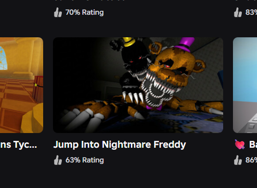

INTERVIEW:

nickyMaurice: "Okily dokily, before we ask any SPICY questions, let's introduce yourself to the 3 people reading this that don't already know who you are."
manado210:
"hi i'm red, i'm an undertale fan and that stuff, and have worked on some AU stuff.
most prominent being my own dusttale take called damnation but like it's in a limbo spot rn cuz i wanna do a redraft of it at some point.
i been in lukeisha for... uhhhhh.... a year, that's kinda crazy to think about ngl."
hi
oh and i also do art
Q1:
How did you find out about LUKEISHA?
manado210:
"ok so funny story, me and hyper actually met up through the insanitytale comms server where i saw some arts of their storyshift and some other miscellaneous au takes (before i knew about lukeisha).
i think something funny happened cuz i drew a funny piece of art in response to something involving seeing some mask, and then i ended up in the server.
really cool"
nickyMaurice:
"And what interested you the most about Lukeisha?"
manado210:
"Hyper took characters with concepts that are fixed in the community and transformed them into such unique and different ideas, and it was love at first sight."
Q2:
So who’s your favorite character?
manado210:

Q3:
What motivates you to make content?
manado210:
"I like to experiment with possibilities, new concepts, and delve into a universe that even I don't fully understand, and if Hyper likes what he sees, that's enough for me to continue."
Q4:
Do you think joining the Lukeisha server had an impact on your life? Would things be different if you hadn't?
manado210:
"I won't lie, it didn't make that much of a difference in my life, but it's always nice to meet new people and show them your work."
Q5:
Waffles, or Pancakes?
manado210:
"absolute Pancakes"
nickyMaurice:
"Anything you'd like to add?"
manado210:
"Stay hydrated."